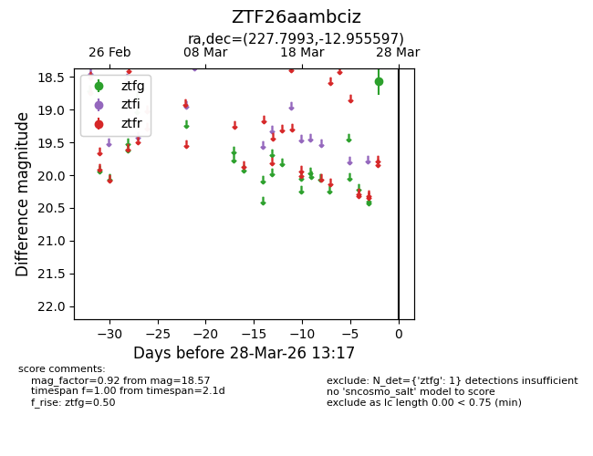
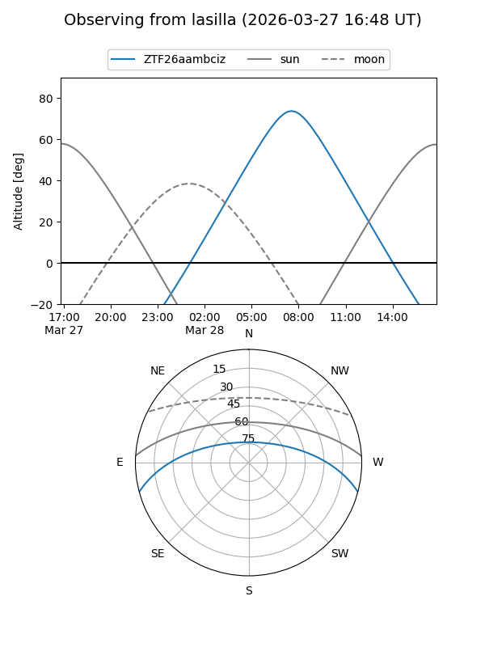
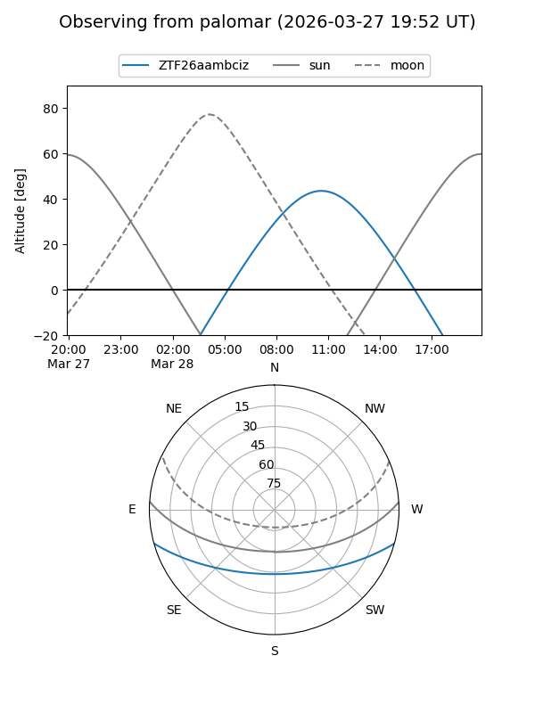

ZTF26aambciz
Target ZTF26aambciz at 2026-03-28 13:20
Aliases and brokers:
FINK: link
Lasair: link
ALeRCE: link
alt names
ZTF26aambciz (ztf,fink_ztf)
Coordinates:
equatorial (ra, dec) = 227.7993,-12.95560
equatorial (HMS+DMS) = 15:11:11.83,-12:57:20.15
galactic (l, b) = (347.6421,+37.50061)
Flags:
Photometry:
last ztfg=18.57
1 ztfg detections
Lightcurve

Visibility


Additional plots